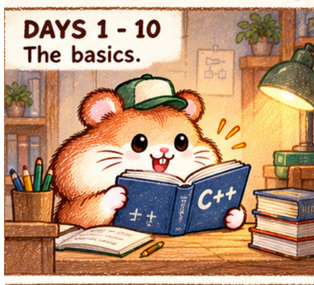

保留原场景里的可爱感，只细修毛发与胡须
对照重点：原稿的鼓腮、帽子倾斜、抱书探身和开心表情是否保留；毛发的深色短线与尖硬外沿是否减轻；胡须是否仍然抢眼。


用户已对这版细修给出正反馈；原九格未替换。后续动作仍需对照检查。角色表不能单凭整齐统一就取代原场景里的表情和体态。
对照重点：原稿的鼓腮、帽子倾斜、抱书探身和开心表情是否保留；毛发的深色短线与尖硬外沿是否减轻；胡须是否仍然抢眼。

用户已对这版细修给出正反馈；原九格未替换。后续动作仍需对照检查。角色表不能单凭整齐统一就取代原场景里的表情和体态。